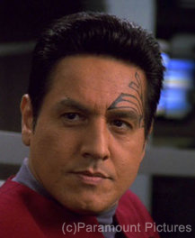

The comments at this post relate to the Star Trek TV series and movies.Here’s the original, related article:
Did Chakotay die in a mid-season episode of Star Trek: Voyager, and return — with no explanation — several episodes later?
This question was raised at Dragon*Con 2010 in Atlanta, Georgia, in a conversation between two fans of Star Trek: Voyager and actor Robert Beltran, who portayed the character, Chakotay.
Two people at Dragon*Con clearly remembered Chakotay’s death in a mid-season episode. They recalled his baffling (but welcomed) return, about four or five episodes later. They described the episode in detail, and wanted to know why there had been no explanation for Chakotay’s return.
Robert Beltran was surprised by the question. He said his character didn’t die at that time, no episode like that was filmed, and — as far as he knew — it was never even discussed by the writers and producers.
I joined that conversation because I overheard it and immediately connected it with the Mandela Effect.
I referred to it in my article, Nelson Mandela Died in Prison? I was making a point about how we explain to ourselves our alternate memories, preferring something logical within our everyday reality.
In that article, I said:
During Dragon*Con 2010, someone insisted that he remembered a Star Trek episode that — according to one star of the show — was never filmed. The person who remembered the alternate episode wasn’t weird or wild-eyed… he was a very normal person, and only referenced the episode as part of a routine conversation.
I was there when he heard that the episode never existed. He was stunned, and quickly tried to find a logical explanation for his “faulty” memory.
Since then, the Chakotay topic has generated interesting discussions.
The following are some comments related to Chakotay, Star Trek, and a story line that — apparently — never existed in our timeline.
On 3 Mar 2012, Joe said:
I have read about that vanishing Star Trek episode before years ago on some discussion forum, but can’t remember the details. Do you have a description by chance? I swear I remember looking it up and remembering it being aired but not being able to find a description anywhere, much like the person mentioned above.
I replied:
The fan was talking with Robert Beltran, and the fan said how happy he and his wife had been, when the Chakotay character was “brought back” into the story. The fan said how disappointed they’d been, when the character had been killed off.
That fan — with his wife by his side — asked Robert Beltran why there hadn’t been an explanation in the story. They said that Chakotay had just reappeared, as if he’d never died and never been out of the Star Trek series at all.
Mr. Beltran looked at the fan, confused, and said that Chakotay hadn’t been killed during the series, and so there was no “return” to explain.
Both the fan and his wife did their best to take this in stride, but I could see that they were baffled. That’s why I decided to talk with them, give them my card, and tell them that — if they had other questions — to let me know.
This was a moment when it wasn’t just one person’s memory. It was the memory of two people, who were in complete agreement about what they’d seen on the TV.
As I left them, they were still trying to figure out what it was that they actually saw, because neither of them had another explanation for something they remembered so clearly.
When these things happen, the logical assumption is, “Oh, I must have been mistaken.” However, when two people are in complete agreement, and they both experienced the event, this becomes unsettling.
On 4 July 2012, tsadowq said (in a longer comment):
Isn’t it interesting that Whoopi Goldberg’s character “Guinan” (sp?) is from a race that is aware of these alterations in the timestream? There are at least two episodes where the timeline changes, and she is the only member of the Enterprise crew who is aware of it.
On 6 May 2013, Ironic said:
Actually, in the final episode ‘Endgame’, Chakotay did die, but it was an alternate reality, if you can believe that. His wife Seven of 9 was killed and when he returned to Earth it is implied he killed himself. Janeway goes back in time and changes it so Seven and he live. How’s that for ironic??
On 27 December 2013, T said:
I also remember the “missing” Star Trek Voyager episode with Chakotay being killed, then returning a week or so later like nothing happened; this was a midseason episode, not to be confused with the series finale “Endgame”.
On 28 Dec 2013, Gurluas commented:
Being a Voyager fan I am interested in the episode where Chakotay died…Maybe in that reality they decided to replace him instead of Kes?
Here’s some of what I said in my reply:
I happened to be near Robert Beltran’s “Walk of Fame” table at Dragon*Con when the couple approached him with the question about Chakotay’s death and unexplained return. They didn’t give a whole lot of information, but I got the idea there was a lapse of about five episodes before Chakotay returned, as if nothing had happened.
Beltran replied that the show had never filmed anything like that, not even as an alternate ending to a storyline. As far as he knew, nothing along those lines had ever been written, either.
When I spoke with Beltran later, he said he’d never heard that kind of question before, so he had no insights at all…
Since that particular couple recalled Chakotay’s death — and both were absolutely certain of the episode where he died — I’m sure others do, too. It seems pretty rare for someone to have one of these celebrity-related memories, unless others have that same memory.
What really interests me is: They described episodes between Chakotay’s death and his return to the show. So, either both people (husband & wife) were in an alternate reality for at least a month (starting with the episode where Chakotay died, plus at least three or four episodes without him), or they “slid” for the episode where he was killed and… I don’t know, were there any sequential episodes where Chakotay was missing for other (scripted) reasons? (I’m wondering if they “slid” and saw the episode in which Chakotay died, and then slid back into their home universe at another, unrelated point where — in our current timestream — Chakotay wasn’t featured for a few weeks.)
That might contribute to an understanding of the duration of slides.
My recollection of Nelson Mandela’s funeral involved days. The same is true for the times I turned on the TV, saw that they were still covering Billy Graham’s death, and I turned off the TV, immediately.
So, for those particular “slides,” I was in a different reality for days or longer.
The Chakotay incident seems to involve weeks. The more information we can gather about extended events like that, the more clues we’ll have regarding the duration of some (not necessarily all) “slides.”
Gurluas replied:
Chakotay may have been missing for a few episodes, but definitely not five in sequence. It would be interesting to find out when in the series this exactly happened.
Robert Beltran was an outspoken critic of where his character and the show was going.
http://www.treknews.net/2012/07/21/robert-beltran-star-trek-voyager-interview/
It’s very possible that in some other reality he insulted some executive and he decided to end Chakotay’s run early. A bit similar to what happened to the Professor on Sliders.
(My thoughts, after a few conversations with Robert Beltran: He’s one of those forthright people who speaks his mind. I’ll admit I’d expected him to be “just a pretty face,” but he’s a thoughtful guy with intelligence, integrity, and humility that shine through. In most realities, I’d expect him to be honest, and outspoken when he needed to be.)
Later on 28 Dec 2013, Gurluas suggested:
Anything is possible. But I personally believe that either our memories are being overwritten by another reality, or we make short jaunts to other realities without noticing it.
I believe it is the former. As our memories for the most part, everything that defines us. If we get a few days of memory from a reality almost identical to ours, we most likely wont notice.
The problem for some when these events appear to happen in real time.
An example being, the couple who watched Star Trek Voyager, and saw Robert Beltran’s character Chakotay die, then he was gone for several episodes and back.Did they live in another reality for those episodes? Or was their memory overwritten with information where they watched those things happen?
The most common effect appears to be emotional though. Real memories seem to be rare.
Often people remembers being sad that someone dies for instance, but they do not remember concrete memories, just emotions.
I was asking some people some time ago. And I asked about Billy Graham, and someone I knew remembers being sad at his death. With further inquiry, it wasn’t the priest Billy Graham, but the wrestler. He is ALSO not dead.
I believe that some things can leak over. And it can be anything from emotions, to memories, to light (ghosts), and even to flesh and blood beings. and exotic particles.
That’s where this discussion is, as of late December 2013. I hope you’ll share your thoughts and comments, below. I’m especially interested in hearing from others who recall the “missing” Chakotay episode, and those who can use that TV show — or something similar — to put a bracket (a time frame) around a series of events that weren’t in our current timeline.
By the way, you should watch the TNG episode “Parallels” It’s actually quite interesting when compared to the Mandela effect.
Gurluas, I’ll do that, thanks! I haven’t seen that episode in forever. (Okay, not literally, of course… but it’s been a long time.)
Did this couple, by any chance, say which season Chakotay died in? I feel like there was an episode sometime around 1996 (when I was a kid and started watching) where he had a near-death spiritual experience, or was actually declared dead (by the Doctor/Janeway/someone) down on a planet? But I haven’t rewatched most of the episodes so I could be wrong.
Cel,
I wish I’d paid attention or knew how to contact that couple. I didn’t and don’t, and I doubt that Mr. Beltran would recall, either. I remember him looking at them, completely baffled, because it made no sense to him. According to the couple, he died and was actually written out of the show for several (many?) episodes. That’s all I recall, but I know it occurred when Chakotay had become involved with Seven of Nine.
Sincerely,
Fiona
That’s very curious because that didn’t happen until the end of the very last season when the show was about to end.
Kes was written out when they brought Seven of Nine in the show, now my theory was, that they had written out Chakotay in that reality, since the actor was very unhappy with how his character was doing.
But that happened in Season 4 I think. Chakotay and Seven got in a relationship in Season 7, and actually around the very last episodes. Did their reality had more seasons? Or did the relationship kick in earlier?
Earlier in the show it was hinted the Doctor or Harry Kim would have a relation with Seven.
The Chakotay and Seven relationship popped out of the blue actually.
Also, I just remembered this, in the very last episode, an alternate future version of Chakotay died.
If they only watched part of that episode, and then saw reruns or something where he was alive. They could have confused it?
I wish I could work with that idea, but it’s not a match for this case. They were both 100% certain which season it was in, exactly when it occurred in the episode sequence, which episodes followed where he died, how many episodes were in-between, and so on. The couple were also very well-grounded. They were nice, intelligent people. They weren’t obsessed fans and they almost stood out in the crowd because they looked so very normal.
When I spoke with them about the Mandela Effect, they weren’t impressed. (They like their fiction — including sci-fi — clearly separated from reality, thank you very much. LOL) They were absolutely, positively, certain they’d seen the episode they discussed, in the sequence where they saw it.
Robert Beltran seemed intrigued by the Mandela Effect, because he was kind of taken aback when the couple were so insistent about what they’d seen.
However, given the details the couple included, and how tidy and precise they seemed, as individuals, I don’t think they confused a rerun of a later episode with where they were in the series sequence.
Well it was just an idea. I wish we could contact them, it would certainly help.
The possibilities as I see them are the following.
1. Their Voyager started earlier, or later than ours, and thus did not end at the same time. This means that they may have seen a Season 7 finale where Chakotay died, and then tuned in to say… our Season 6 where he was fine.
2. Their Voyager had eight seasons, not seven. And they wrote off Chakotay in Season 7. Although the series ended in Season 7 so it makes little sense.
3. Chakotay and Seven of Nine’s relationship started properly as a build up in season 5 or so. And then they wrote off Chakotay at the end of Season 6. When they tuned in to our reality he’d be back.
That is all I can think of…
Good explanations, thank you! I like this.
I gave them my contact information, but I think they’d just been a little traumatized by meeting a favorite star (Robert Beltran) and then asking him about his death and return in the series… and finding out it never happened.
Then, I probably compounded the problem by trying to explain Mandela Effect to them… and I may have sounded a little mad to them. (It’s okay. I get that a lot. LOL)
Seriously, I’d love to hear if they had a real, “normal” answer to what they saw. However, while I was able to give them my business card, I don’t even know what their names were.
Maybe they’ll stumble onto this thread, some day. I like to think they will.
Cheerfully,
Fiona
I asked my trekkie boyfriend and he wonders if anyone could have been misled or confused during the episode Cathexis? Season 1, episode 13, originally aired in ’95.
http://en.wikipedia.org/wiki/Cathexis_(Star_Trek:_Voyager)
Hi, Charlotte,
Since the original discussion included Robert Beltran, that possibility was raised — and ruled out — early in the conversation.
Cheerfully,
Fiona
I don’t remember what happened on the show. But I remember he was killed. That was the reason I stopped watching the show, I was just so mad, he was my favorite character and yes I had a crush on him.. So how dare they kill him off, and I never watched the show again, because they killed him.
I know of someone who suggested it was a misunderstood Unity, a season 3 episode. It seems like the best solution, though I haven’t actually watched much of Voyager myself to determine how much screentime Beltran had in the following episodes.
Star Trek Voyager
Seasons 1&2
As I watched these in order, twice I found I had missed a specific topic they spoke of so I’d backtrack only to find that I missed an episode … over site on my part … twice?
At the end of the Opening credits … the RED and BLUE background star field was a perfect horizon for the first 2 years minimum. Now it seems it is on an angle for all 7 years, which my recollection suggests that the angle did not occur until about 5th season.
Robert Duncan McNeill (I recall McNeil)
Neelix – I clearly recall Nelix
B’elanna Torres – I recall Be’lanna possibly Bel’anna
Prototype: Episode 13 Season 2 – used to be an early episode in Season 1. The first half of episode is all different from what I remember. I recall the body of the androids being solid silver/gold metal, not clothed. B’elanna Torres refers to Harry Kim as Starfleet. This phrase I remember dying off early in Season 1. A few other Episodes in Season 2 I remember being in Season 1.
I noticed Robert Beltran didn’t seem to have a lot of dialogue from the middle of season 2 to the end of season 2. Not sure if this is related to memories of ‘lost’ episode.
2-17 Dreadnaught: I recall a different dialog … also recall this as a season 1 episode.
2-19 Lifesigns: I recall a different ending
2-20 Investigations: I recall a different beginning and straight through the middle the episode seemed different to me, probably dialog. (dialogue)?
2-24 Tuvix: I recall being a season 3 Episode
The differences I find almost seem like someone wasn’t paying attention or the making of the episode just wasn’t that important. I’m under the impression that many of the episodes are already written before the series begins and they basically have to find an order that makes sense. Except for some dialog that makes it look as though all of the episodes were filmed over a weekend, I like this reasoning.
How can it be said that Chakotay didn’t die, when here’s a video of it on YouTube:
https://www.youtube.com/watch?v=uG1pTySaFRs
Uploaded on Nov 30, 2007
Just another longer J/C vid, once agian Kathryn morns Chakotay’s death after a shuttle mission ends in tragedy.(ok maybe that was a bit melodramic lol, but ya get the point)
And another of Janeway grieving, with scenes of Chakotay’s dead body and his grave:
Uploaded on Nov 30, 2007
https://www.youtube.com/watch?v=XsKI42vZI_U
I moved this comment to the Chakotay article, to keep it in context.
Those clips are from an alternate reality that was presented — and resolved — within one episode. A comment by Ironic mentioned it, and I included that comment in my Chakotay article.
As summarized at Wikipedia: “By time of the series finale, ‘Endgame’, The Doctor had managed to remove the implant allowing Seven to pursue a relationship with Chakotay. The alternative future seen at the start of the episode showed that Seven and Chakotay were eventually married but she died while Voyager was still travelling home. Chakotay died following Voyager ’s return, and Admiral Janeway visits his grave marker in that episode. This future was undone by the future Janeway travelling back in time to Voyager in order to return it to Earth sooner.”
That’s not the same death that people described at Dragon Con, where I first heard about this memory. The death in question occurred far earlier in the series, so I don’t think people had confused the footage shown in the videos. Also, I’m fairly sure Robert Beltran raised that issue when he was trying to make sense of the 2010 conversation.
In the memory of the couple — who were very level-headed people when I spoke with them — Chakotay died in a mid-season episode. Then he was missing from several weeks’ shows. (I got the idea that it was around five episodes, definitely not just one or two.) Then, in a later episode, he returned without explanation.
So, while those are great links, the videos refer to an episode that’s not part of this mystery. When we talk about our alternate memories, we’ve generally researched them to see if there’s a logical explanation that led to confusion on our part. So, a Google search for “Chakotay died” would have turned up the “Endgame” episode, and solved this immediately.
I appreciate your efforts to share those links, and I understand that “Endgame” might have confused a few people, but it’s not the Chakotay death we’re talking about, here.
I can answer the episode count for you. 20 episodes were made for the first season but for some strange reason in the US the last four Projections, Elogium, Twisted and The 37’s were held off to be incorporated into Season 2 which leads to a curtailed Season 1 ending on Learning Curve. The BBC in the UK as well as the VHS episodes showed them in the correct order but in the US and DVDs they are always shown in the wrong order. I hope that at least clears that up.
Anthony, I’m not sure what to think about differences at Netflix. More than once, I’ve noticed a significant difference in a production, there, but it remained true to my memory via Amazon Prime (and Roku), or at Hulu Plus (also via Roku). In each case — which I probably should have written down, as I can’t list them off the top of my head — the Netflix version was shorter, with scenes cut. I might not have noticed, except that they’d cut some frivolous, fun lines that I’d previously found endearing.
Fiona help! Im having a star trek ME . I was recently watching an episode of Futurama called were no fan has gone before. It mentioned that star trek TOS had 79 episodes. Real quick the math for me didnt add up. Because i have had the memory that TOS had run for 7 years. Well blam! I looked it up on wiki and sure enough its only 3! Now i remember hearing in a old documentary about the show that kirk had to read a different opening version of the “were no man has gone before” monolog . Adding to it “its contuing mission “. They said he did this becuase it ran over 5 years!. And now instead of him saying it ,turns out only picard did it in TNG. I love star trek ..i mean love it. To find this out has me freaked out. Please! Have you ever heard of this before? I mean ive been really mad at netflix for the past 3 years because they wouldn’t add the remaining 4 years to thier line up. Btw ive always known picard said “its contuing mission ” but i just thought they used that from the original because it made sense. In my mind i could have swore it ran from like 64 to at least 70. But maybe ive lost my mind completely. Btw i also am aware and have been that they showed the series in the U.K.up until somtime till the mid 70s. Thank you for your time
Billy H, I haven’t heard this before. For now, I can only recommend going through the episodes that are listed (for the three TOS years), and see if you can recall anything about the missing episodes. With more information, you might find an answer, online.
Commenting on TNG, there is an episode where Riker is making scrambled eggs for several members of the crew. The eggs turn out to be spoiled and everyone but Worf makes a face of disgust. What I remember is Worf shoveling the eggs into his mouth, looking up, and very excitedly says “Is there more?!”. I’ve seen every episode of TNG multiple times, but when I saw it last, he just quietly eats his and says “Delicious”. Please tell me someone else remembers my version, or that it was a deleted scene somewhere. Thanks.
Stephen E., please include details: Which episode was that? When aired? Where were you (generally) when you saw the previous version?
I feel like chakotay died as well… I liked Voyager a lot when it was on. I was in middle school and had been raised on TNG/TOS reruns. I remember hearing about chakotay dying. I wasn’t watching the show anymore by then, though. I watched the first 3 seasons, and then kinda drifted away. The thing is… I tried to show my wife Voyager after we watched all of TOS and TNG and DS9 together.. and the show felt so *off* to me, that I couldn’t watch it.
I would never have thought about the show actually being different until after learning about the Mandela Effect – but that’s exactly the feeling I had when we watched the first few episodes together. Even stranger, everytime Voyager is brought up – by the web, or friends, I immediatly think: “oh, my wife still hasn’t seen Voyager! …” and then later I realize we did.. I wonder if that happens because she still hasn’t seen “My” Voyager..
Also… I remember the show starting in 96/97… I remember it was the flagship show for UPN, and I swear I watched the first episode in 96…
Stephen, your phrasing definitely resonated with me. It’s one of those feelings that’s difficult to articulate and even more challenging to document with hard data points, but — now and then — someone describes a memory in terms that are deeper and more resonant than others. This is definitely one of them. Thank you.
Feel like sharing some strange mis-rememberings I have about various Star Trek series, would like to find out if these can be explain away by my age at the time or if anyone other familiar with the franchise also have them. My dad is a big-time Trekkie, and I’ve been watching the various franchise installments with him since I was a baby. I’ve seen most of the original series, and don’t really have any misgivings about my memories of it, most of the weirdness seems to revolve around TNG/DS9/Voyager and characters not being how I remember them upon a rewatch:
I have this odd feeling that Voyager blipped into existence for me at some point where before various elements of it were tangled with DS9. This is the thing I’m least sure about, as I could have just gotten the storylines confused and not remembered them as different shows. However, I’m almost positive that 7 of 9 was a character on DS9 and possibly TNG, and I have vague recollections of her interacting with cast members from both (Specifically, Geordi from TNG and Dax from DS9). I don’t remember any of the other cast members of Voyager from my childhood, and I remember being somewhat surprised years later to find out there was a series with a female captain.
Now, here is the big one, that I have the most difficulty dismissing:
Something that has always bugged me about DS9 is Odo’s character, and the shapeshifters in general. I seem to remember a wildly different characterization for him and his species as a whole. They were never antagonistic, and he and the female shapeshifter (who is one of the main villains of the present storyline) both lived onboard DS9 as regular cast members- although Odo wasn’t a security guard, not grumpy at all, and both of them had very little dialogue and were overall a lot more alien-acting then he was at any point during the present storyline. I remember this being so from when I was about eight years old, and by the time I was fourteen it had changed and has remained the way it presently is since. I remember scenes of them onboard the station that obviously no longer exist.
Also, the character who is currently Jadzia Dax was a male (but yet not in my memories of her interactions with 7 of 9, which just confuses me)? Chief O’Brien wasn’t present on the show from the start but was introduced at the same time as Worf (this one only caught me on my most recent rewatch from a few months ago).
I can distinctly recall a final scene from the star trek episode, the trouble with tribbles. Right after Scotty says they’ll be no trouble at all, weget a short scene of the Klingon ship which is now full of screaming tribbles and angry Klingons. Apparently that scene never happened. I have even read a book by the author of the episode which includes a final copy of the script and the scene is not there, neither does he mention it.
Hi Hugh, I am positive of the ending you discribe and I’m going to rewatch all the Star Trek shows to see if there’s any more discrepancies. I’m sure that there is more that three years of the original series, I remember vividly that it’s Berestein Bears and that the color chartreuse is in the red colour spectrum, all of which is untrue in this reality.